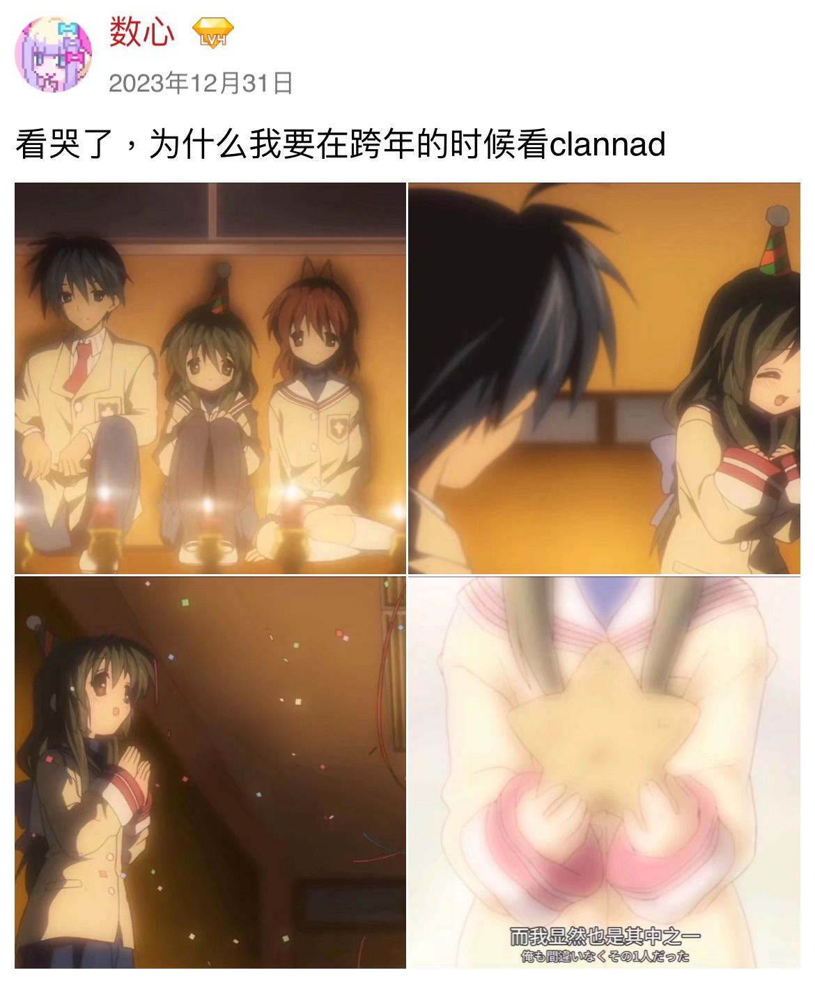

2023年末的碎碎念¶
2023.12.31 最后一天短暂地回顾下今年
科研上终于从小白变成没那么小白的小白，一二月份读了读Foundations of Machine Learning，三月份读了一篇偏理论的paper，以及给组里的工作帮忙整了个数据集，在投nips时挂了个名（虽然其实数据集没用上），这工作没中九月底改投了iclr（希望这次能中），这次帮忙做了些数值模拟和简单证明的工作。以及后半年鼓起勇气去social（虽然是线上）认识了不少大佬，七月份套到了陆一平大佬跟着做remote科研，以及暑研套了个umich的老师过几天chat希望顺利，感觉各方面都非常match
今年和不少网友面基了（像烧风，fdd，99，乐老师），兴趣爱好也完全变了（从v圈变成v家了2333，以及玩gal看番都是被某个人带的），看了些livehouse（像Chilichill和昨天的acg livehouse），特别开心（x
在学校上了些有趣的课像概率论泛函算法导论等，以及领悟到戒课的必要性（把很垃圾的课像数值分析机器学习数据库翘掉来节省时间），也终于学会如何放松了，偶尔和好朋友下山吃饭，感情上的话遇上我二十年以来见过最狗血的人和事，也不想细说了，就让这件事慢慢淡出我的记忆吧
Info
对2024年的展望：
-
希望能学会劳逸结合，目前依然是科研的时候想着放松，放松的时候想着科研的状态
-
虽然对自己的科研水平依然很不满意，但是已经比一年前啥都不会强很多了（）希望能在理论/实验上继续加强自己的能力，脚踏实地发出第一篇一作paper，然后希望能慢慢培养自己的taste，大四能去更高的平台做远程科研，像uw/cmu/stanford之类的（这些暂时不敢想，只是一个激励自己的目标
-
再过两个月就要去瑞士交换了，希望多长长见识，以及想去维也纳和斯塔拉斯堡旅游！去其他国家的时候体会一下当地的文化和研究氛围，多去旅游多蹭蹭会议
-
希望能去Chilichill的巡回live（x，希望能接触多一些可以触动自己的番/游戏/音乐，想再去一些漫展/acg相关livehouse
-
不要上头奇奇怪怪的人，提高识人能力
摘录下去年和前年发的动态
Moments
2022.12.31 没啥好总结的，最主要的还是心态变化了很多，到明年跨年再回头看今年，估计又会是另一种心态 (doge
Moments
2021.12.31 一般只习惯在生日的时候作年度总结，所以就不作2021的总结了 希望2022能继续保持旺盛的好奇心，去接触更多有趣好玩的东西
可能明年回头看现在的碎碎念又会是另一种感受2333
2024.01.01 00:25 为什么我要在跨年的时候看Clannad……很刀但是又好感动 就让我永远地沉溺在虚拟世界里吧
